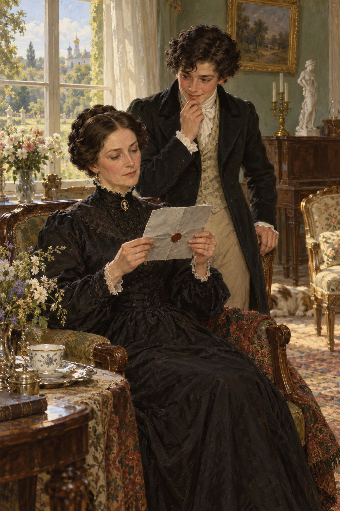

Ivan Turgenev · First Love
제3장
아침에 눈을 뜨자마자
처음 든 생각은 이것이었다.
‘어떻게 하면
저 사람들과 알게 될까?’
차를 마시기 전에
정원으로 나가 보았다.
하지만 울타리 가까이에는
가지 않았다.
아무도 보이지 않았다.
차를 마신 뒤에는
별장 앞길을 몇 번이나 오가며
멀리서 그 집 창문을 들여다보았다.
커튼 뒤로
그녀의 얼굴이 언뜻 보인 듯해
나는 겁이 나서 얼른 자리를 떴다.
‘그래도
어떻게든 인사를 나눠야 하는데.’
네스쿠치노예 앞에 펼쳐진
모래밭을 정처 없이 걸으며
나는 생각했다.
‘하지만 어떻게?
그게 문제야.’
어제 일을
아주 작은 부분까지 떠올렸다.
그녀가 나를 보고 웃던 모습이
왜인지 유난히 또렷했다.
내가 이렇게 마음을 졸이며
온갖 궁리를 하는 사이,
운명은 이미
내 편을 들어주고 있었다.
내가 없는 동안
어머니는 새 이웃에게서
편지를 받았다.
회색 종이에 쓴 편지였다.
봉투에는
갈색 봉랍이 찍혀 있었다.
그런 봉랍은
우편 통지서나
싸구려 포도주 병마개에서나
볼 법한 것이었다.

편지는
문법도 엉망이고
글씨도 지저분했다.
자세키나 공작부인은
어머니에게 도움을 청했다.
자신과 자녀들의 장래가 걸린
중요한 소송이 몇 건 있는데,
어머니가 그 일에 힘을 쓸 만한
높은 사람들을 잘 안다는 것이었다.
‘귀부인인 제가
귀부인께 부탁드리는 것입니다.
이 기회를 빌리게 되어
기쁘기도 합니다.’
공작부인은
철자까지 여러 군데 틀린 채
그런 말을 적었다.
끝에는
어머니를 찾아뵈어도 되겠느냐고
물었다.
내가 돌아왔을 때
어머니는 심기가 불편했다.
아버지가 집에 없어서
상의할 사람도 없었다.
상대가 ‘귀부인’인 데다
공작부인까지 되니
답을 안 할 수는 없었다.
그렇다고
어떻게 답해야 할지도
알 수 없었다.
프랑스어로 답장을 쓰자니
어울리지 않는 것 같았다.
그렇다고 어머니 자신도
러시아어 철자에 자신이 없었다.
어머니는
그 사실을 잘 알았고,
실수를 드러내고 싶지 않았다.
어머니는
나를 보자 반색하더니
곧장 심부름을 시켰다.
공작부인에게 가서
말로 전하라는 것이었다.
어머니는
힘닿는 만큼
공작부인을 돕겠으며,
한 시쯤 우리 집에
들러 주시기를 바란다고.
남몰래 바라던 일이
뜻밖에 이렇게 빨리 이루어지자
나는
기쁘면서도 겁이 났다.
하지만 동요를 내색하지 않고
먼저 내 방으로 올라갔다.
새 넥타이와
외출용 긴 웃옷으로
갈아입으려는 것이었다.
집에서는 아직
깃을 접어 내린 짧은 웃옷을
입고 다녔다.
나는 그 차림이
몹시 못마땅했다.